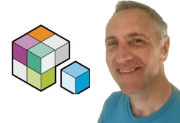

I'm a Product Owner for Placecube helping to develop products for governments, businesses and the communities they serve. Prior to that I worked for a variety of local authorities at every structural level (parish council through to unitary council). You can read my LinkedIn profile to see what I've done in past lives.
A few of the projects I've worked on:
- I was Product Owner for the Phase 2 of the DLUHC-funded Low Code Digital Waste Services project, which developed a reminders capability, a business account, a one-click deployment trading platform and a microsite design template
- I led on the migration of Dorset Council's website from Contentis to Liferay using automated tools. You can view a video about the project
- I led a national discovery project into the use of chatbots and artificial intelligence, securing an £80,000 grant from MHCLG and working collaboratively with 12 other councils. It was evaluated as a ‘good model for other local authorities planning to undertake a collaborative project'
- I led on an in-house development of an intranet for Oxford City Council in Drupal. The project team I managed was awarded Team of the Year award at Oxford City Council staff awards in 2015
- I led on the redevelopment of Oxford City Council's website in 2016 which saw satisfaction improve to be consistently in the top five nationally (as measured through GovMetric benchmarking) and a move of 26.3% of online transactions in 2015/16 to 43.2% in 2019/20 through digital service improvements
- I project managed the redevelopment of a derelict council building into a new Health Centre for Banbury
- I undertook a Best Value Review of Library Services in Oxfordshire which was identified as one of 10 nationally that had led to “significant change”
- I played a key role in the development of Oxfordshire County Council’s CPA improvement strategy. This includes writing the Council’s corporate improvement plan, devising a strategy to take the Council from a ‘fair’ CPA assessment in 2002 to an ‘excellent’ assessment in 2005
I first cut my teeth on web projects in the early 90's when I decided I'd set up a website for the motor racing club that I was involved with. All frames and static html pages with a bit of javascript borrowed from other sites.
I'm a keen member of LocalGov Digital, a community of local government digital practitioners, and was on its Steering Group for a number of years
You can view my Flickr site if you're interested in seeing the kind of photographs I like to take.